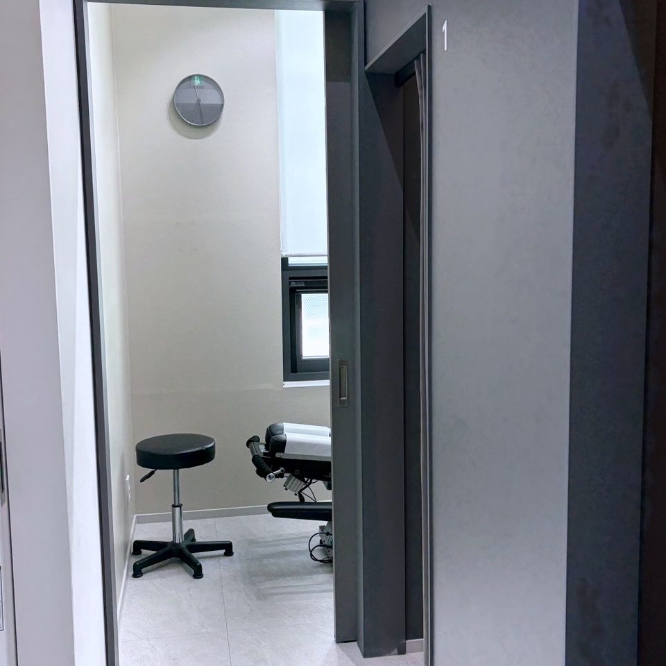
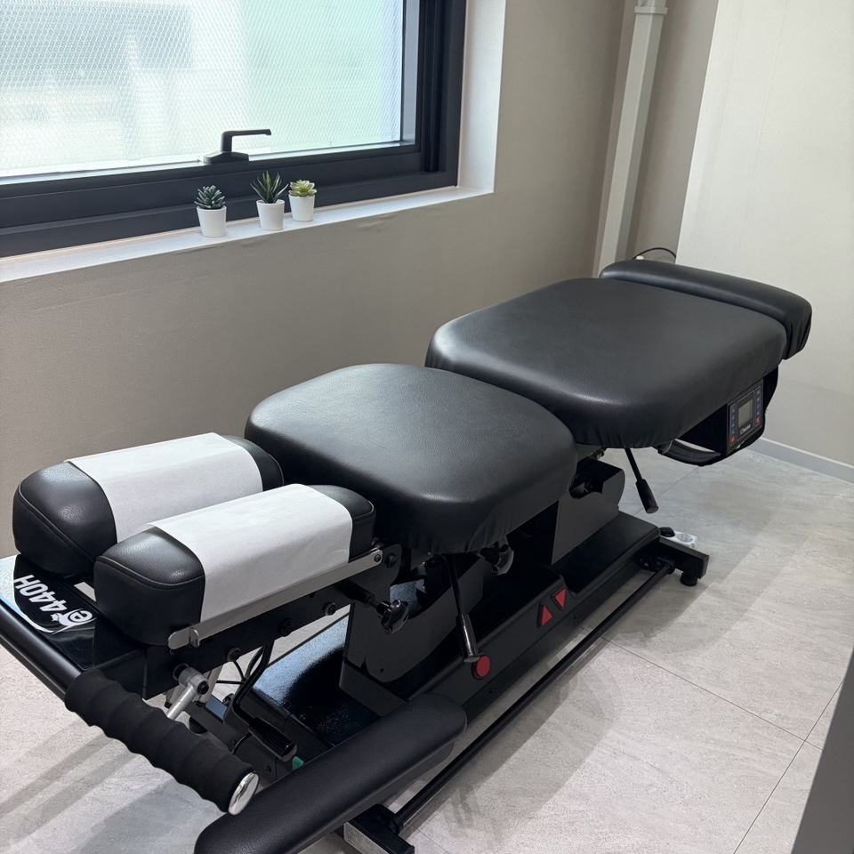
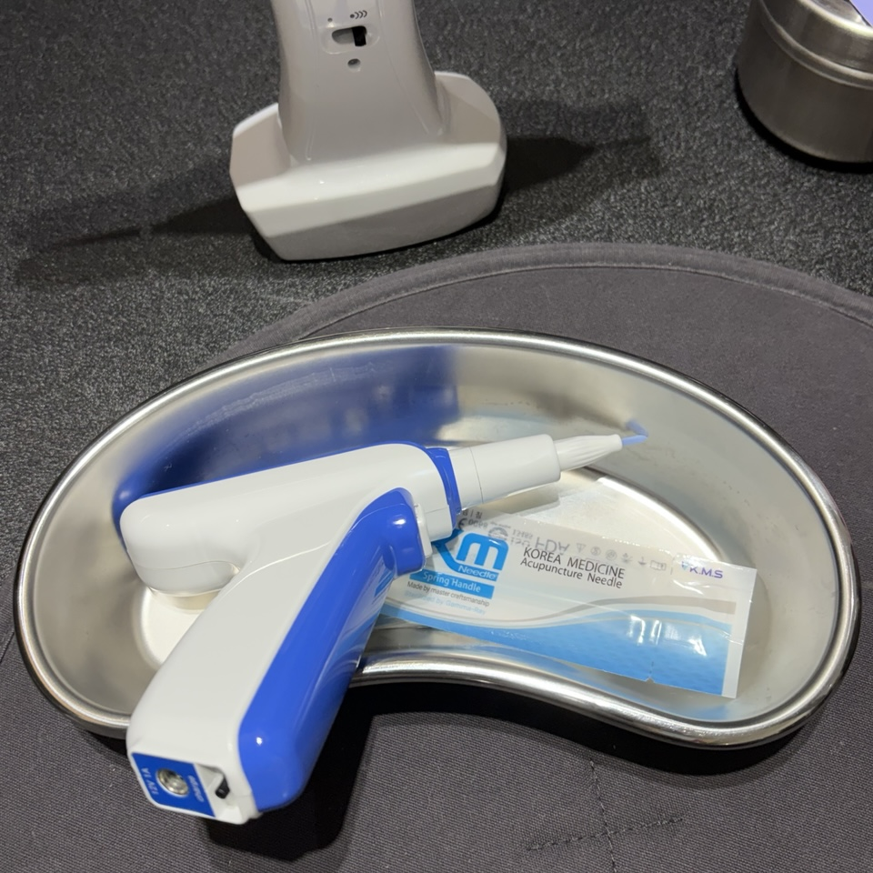
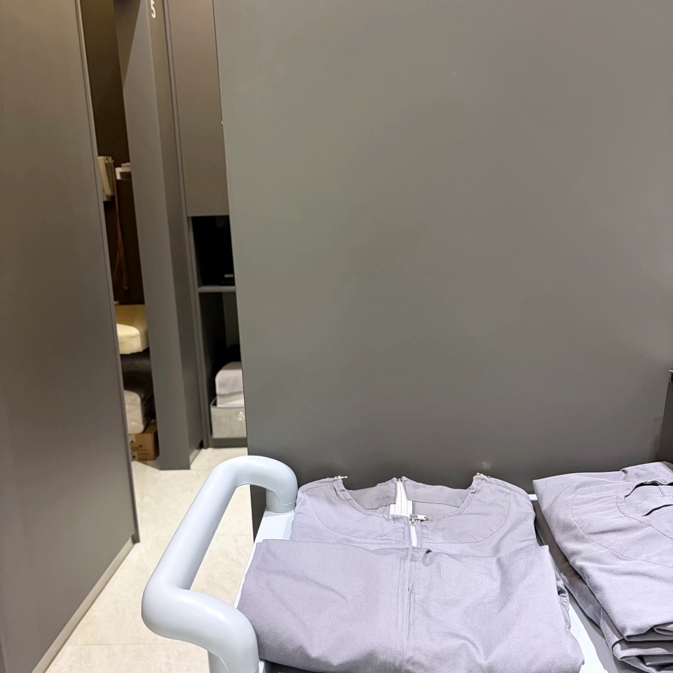

사고가 나고 사흘쯤 지나면 몸이 먼저 말을 겁니다. 당일에는 멀쩡했던 목이 아침에 돌아가지 않고, 허리가 묵직하고, 운전석에 다시 앉는 일이 어쩐지 꺼려집니다. 사고 뒤 통증은 대개 한 번에 나타나지 않습니다. 사고 직후에는 괜찮다가 2~3일이 지나면서 어깨가 뻐근해지고 뒷목이 뻣뻣해지며, 두통이나 머리가 멍한 느낌까지 번지는 경우가 많습니다.
그때 드는 생각은 대개 하나입니다.
‘병원을 가야 하나, 한의원을 가야 하나. 어디로 가지?’
무엇을 들고 오면 되나요?
보험회사의 사고 접수번호입니다. 접수번호가 있으면 자동차보험으로 진료를 시작할 수 있고, 진료비는 보험회사가 지급합니다.
통증이 사고 며칠 뒤에 시작됐어도 괜찮습니다. 사고가 접수돼 있다면 불편이 느껴질 때 바로 오시면 됩니다.
- 예약네이버 예약 또는 전화사고 날짜와 불편한 부위를 알려 주시면 됩니다.
- 접수보험회사 사고 접수번호자동차보험으로 진료를 시작합니다.
- 진찰네 가지를 먼저 확인통증 위치, 움직임 제한, 신경 증상, 전신·내과 상태
- 치료추나·침·약침상태에 맞춰 함께 쓰고, 추나는 한의사가 직접 합니다.
- 경과나아진 것과 남은 것을 확인그에 맞춰 다음 치료를 정합니다.
처음 오신 날 무엇을 보나요?
디어한의원에서는 교통사고로 오신 분을 볼 때 네 가지를 함께 확인합니다.
- 통증 위치목, 어깨, 허리처럼 어디가 아픈지
- 움직임 제한고개를 돌리거나 허리를 굽힐 때 어디서 막히는지
- 신경 증상저림이나 두통, 어지러움이 함께 있는지
- 전신·내과 상태잠, 소화, 긴장처럼 몸 전체의 상태가 어떤지
같은 ‘목이 아프다’도 사람마다 아픈 자리와 막히는 동작이 다릅니다. 처음 오신 날 확인한 네 가지가 이후 치료의 방향을 정하고, 경과를 읽는 기준이 됩니다.
치료는 어떻게 하나요?
치료는 침과 약침, 그리고 추나요법(推拿; 한의사가 손으로 척추와 관절, 주변 근육의 균형을 바로잡는 수기 치료)을 상태에 맞춰 함께 씁니다. 디어한의원의 추나는 한의사가 직접 합니다.




오실 때마다 무엇이 나아지고 무엇이 남았는지 함께 확인하고, 그에 맞춰 다음 치료를 정합니다. 목이 먼저 풀리고 허리가 남았다면 허리 쪽에 무게를 더 두는 식입니다.
언제, 어디로 오면 되나요?
디어한의원은 강남역과 교대역 사이, 서초동에 있습니다. 월·화·수·금은 저녁 8시까지 진료하니 퇴근길에 들르셔도 됩니다. 토요일에도 진료합니다.
- 월·화·수·금10:00–20:00 (점심시간 13:00–14:00)
- 목14:00–20:00
- 토10:00–15:00
- 일정기휴무
목요일과 토요일은 점심시간 없이 진료합니다. 네이버 예약으로 시간을 잡고 오시면 편합니다.
자주 묻는 질문
교통사고 진료를 받으려면 무엇을 가져가야 하나요?
보험회사의 사고 접수번호를 알려 주시면 자동차보험으로 진료를 시작할 수 있습니다.
사고 당일은 괜찮았는데 며칠 뒤 아파도 진료받을 수 있나요?
네. 사고 뒤 통증은 2~3일이 지나 나타나는 경우가 많습니다. 사고가 접수돼 있다면 그때부터 자동차보험으로 진료받으실 수 있습니다.
추나는 누가 하나요?
디어한의원의 추나요법은 한의사가 직접 합니다.
어디에 있나요?
강남역과 교대역 사이, 서울 서초구 사임당로 143 3층 309호, 310호입니다.
저녁에도 진료받을 수 있나요?
월·화·수·금은 20시까지, 목요일은 14시부터 20시까지 진료합니다. 토요일은 10시부터 15시까지입니다.
YOUR NEXT STEP
사고가 났다면
며칠 안에 오세요.
보험회사 사고 접수번호만 챙겨 오시면 됩니다.
월·화·수·금은 저녁 8시까지 진료합니다.
DEAR KOREAN MEDICINE CLINIC
디어한의원
서울 서초구 사임당로 1433층 309호, 310호